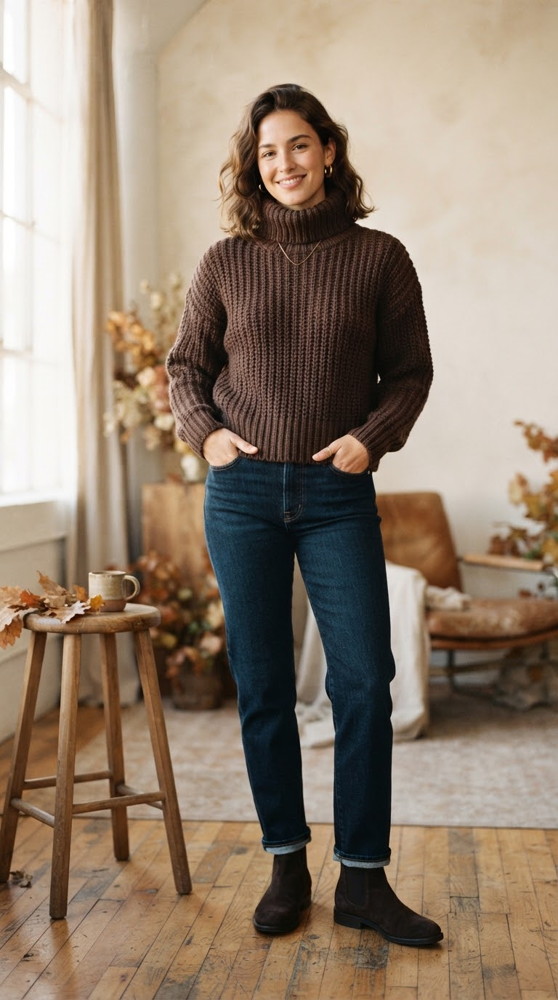
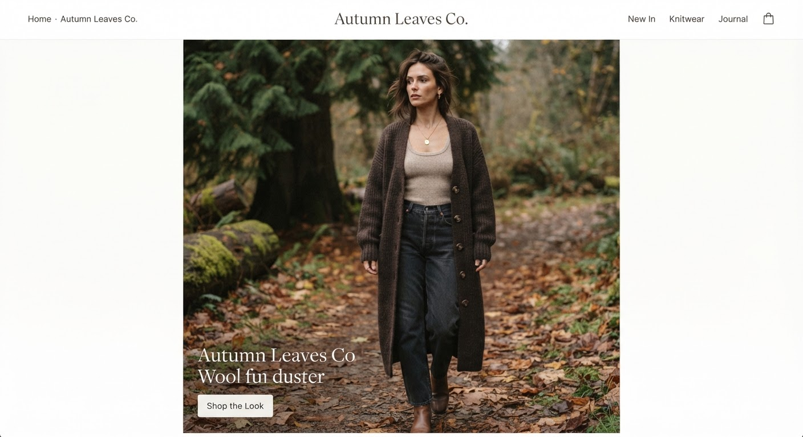
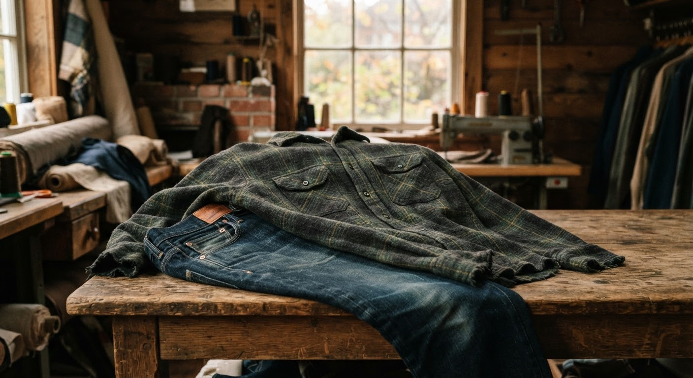
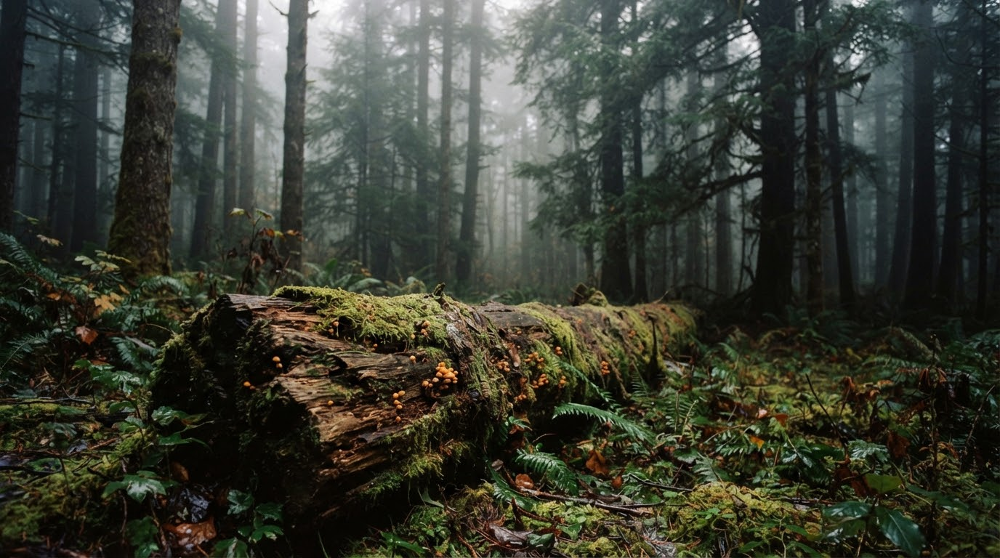
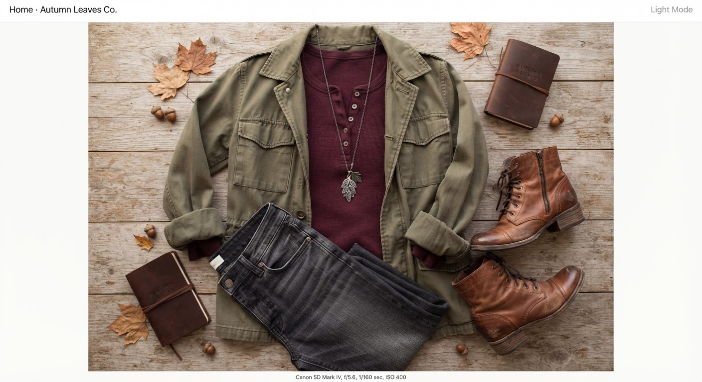
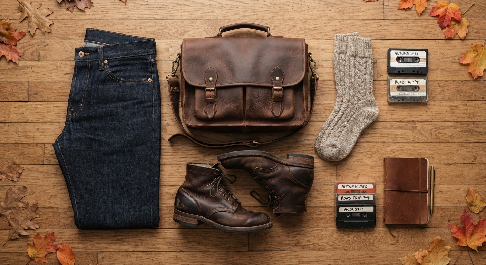
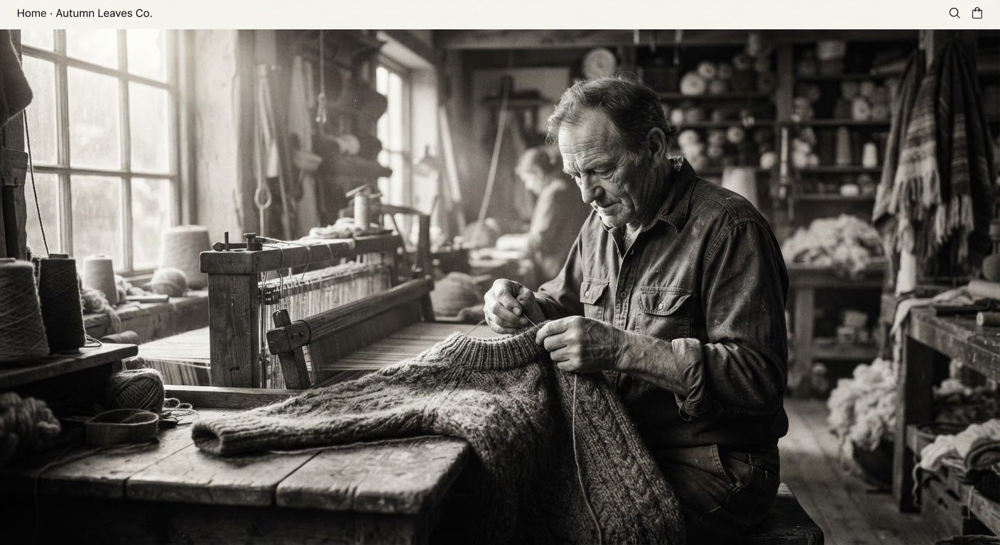
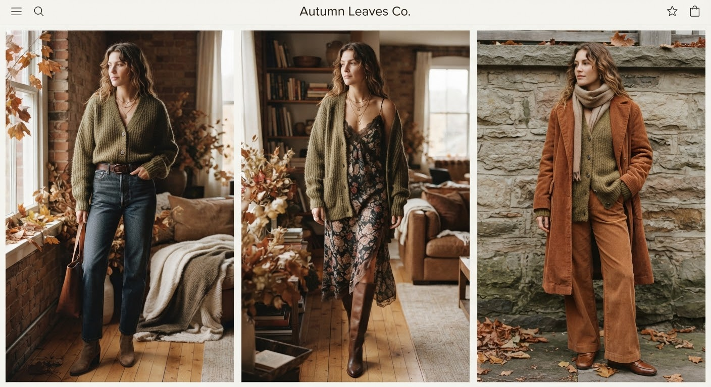
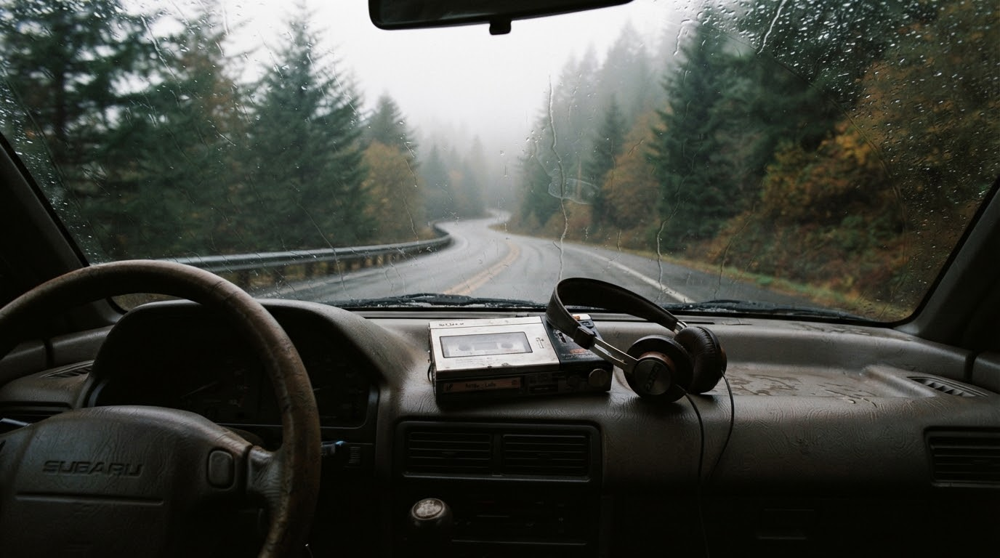
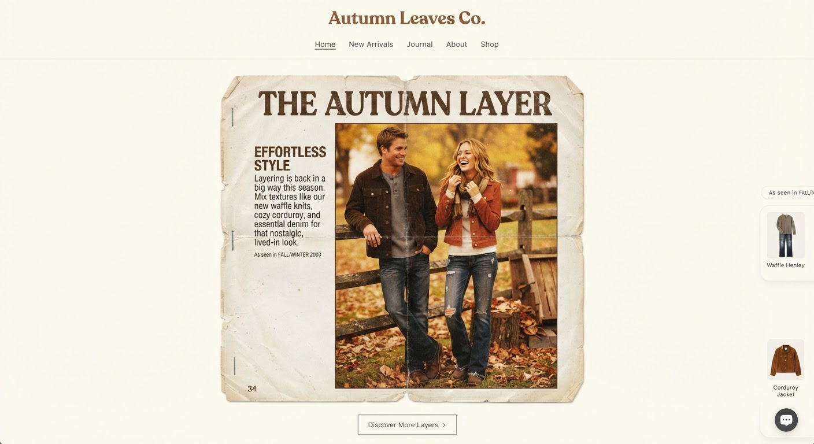

Archival Best Quick Add · $188The Evergreen Valley Turtleneck
100% heavy ribbed lambswool in Cocoa Bean.
$188
A nostalgic homage to damp cedar forests, vintage cable knits, fitted ribbed thermals, and early-2000s Pacific Northwest melancholy. Spun in ethically sourced heavy merino and brushed unbleached cotton.
“The trees are shedding, the kettle is whistling, and dusk arrives at four.”
Field Notes · Forks, Washington4 Signature Silhouettes / Small seasonal editions

Archival Best Quick Add · $188100% heavy ribbed lambswool in Cocoa Bean.

Restocked Quick Add · $215Slouchy floor-grazing drape with hand-carved horn buttons.
Form-skimming micro-rib waffle cotton in Vintage Oxblood.

Quick Add · $164Double-brushed cotton flannel in Washed Charcoal Indigo.
Hand-pinned ephemera from foggy highway drives through Clallam County, oversized thrifted leather jackets, worn paperbacks, and damp evergreen needles stuck to wet boots.

La Push mist line, 7:15 AM

Fitted Ribbed Waffle × Washed Olive Field Jacket
Ground the slim body silhouette with utilitarian canvas and a delicate vintage talisman.
“October ended in rain. The kind of rain that turns the spruce needles almost black and demands two cups of steeped black tea before the boots go on.”
The Rain-Drenched Porch Habit
Still 18
Heavy Dark Wash Straight Cut & Tool Bag
Earth pigments derived from fallen oak bark, wet iron silt, and wild mountain blackberry preserves.

Founded in 2004 along the rain-shadow corridor of the Puget Sound, AUTUMN LEAVES CO. was born from a simple longing: clothing that feels like an old favorite song. Modest, flattering cuts that celebrate un-dyed regional fleece, thick ribbed thermals that endure decades of laundry lines, and relaxed straight silhouettes built to be lived in.
We reject the disposable velocity of modern retail. Every knit is crafted in small seasonal editions, spun from pasture-certified Merino flocks, and tagged with its maker’s initials.
Notes on style, sound & memory — new issues twice a season

From relaxed Sunday markets in Capitol Hill to misty trail walks at dusk — pairing heavy gauge wool with early-aughts low-rise denim and worn riding boots.

Folk melodies, acoustic guitars, moody early-2000s indie rock, and songs that sound best through rolled-down windows when the heater is blowing full throttle.

Exploring the emotional permanence of fitted waffle tees, long sleeves pushed to the elbows, and clothes that were made to be loved rather than staged.